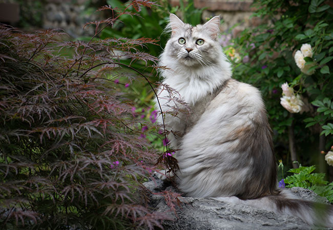
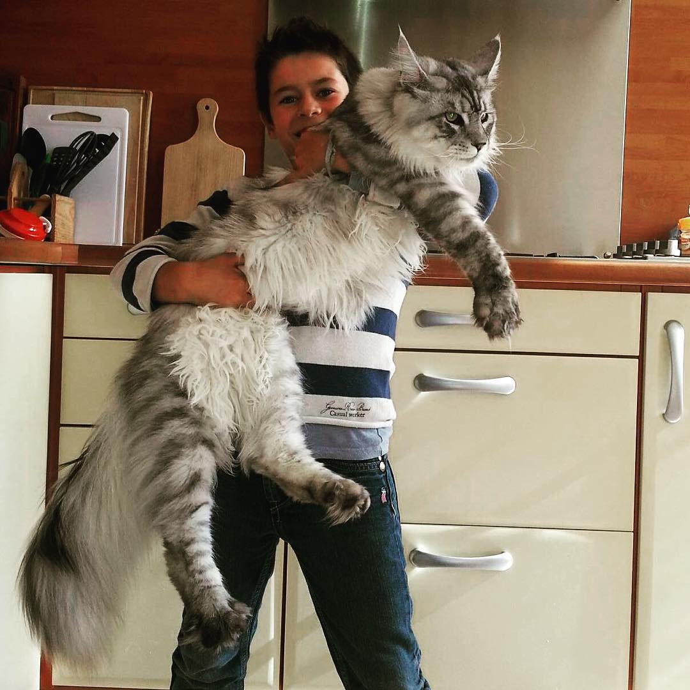

7. Maine Coon elsker vand
Katte er ikke kendt som de store vandelskere. Alle katteracer kan ganske vist svømme, når de er tvunget til det, men der er en god grund til, at det hedder en "vandhund" og ikke en "vandkat".
Maine Coon'en er dog nok den huskat, der bedst kvalificerer til betegnelsen "vandkat". Maine Coon's er nemlig meget fascinerede af vand. Måske skyldes det, at deres tætte sneegnede pels er delvis vandskyende. Nogle Maine Coon's kan finde på at vende bunden i vejret på vandskålen for at lege med vandet, andre er faste gæster med øjnene på stilke, når bruseren er tændt, eller der bliver skyllet ud i toilettet.
8. Nogle Maine Coon's har 6 tæer
I gamle dage var der mange Maine Coon's, der havde 6 tæer på poterne. Det var dengang faktisk op imod 40 % af Maine Coon's, der var polydaktyle, som den harmløse genetiske "defekt" kaldes.
I dag er denne procentdel kraftigt reduceret. Det skyldes ikke mindst, at polydaktyle Maine Coon's på forhånd er diskvalificeret til at deltage i skønhedskonkurrencer for katte. 6-tåede Maine Coons findes dog stadig. Der er også en kreds af katteavlere, der lobbyer for en særlig konkurrencekategori for flertåede katte.

9. Maine Coon kurrer som en due
De lyde, en Maine Coon frembringer, er noget for sig. De fleste katte har et lidt større reportoire end et standard miau. En Maine Coon har et helt symfoniorkester til sin rådighed. De kan både kvidre og kurre som en due. De har også forskellige agiterede kald, når de for eksempel har spottet en fugl, som de godt kunne tænke sig at gå i kødet på. Dette kan både lyde som en trillen og som en lille hunds bjæffen.
Læs også: Populære navne til katte og hunde
10. Maine Coon rekorder
Den længste kat nogensinde er i følge Guiness World Records Maine Coon'en Stewie, der er blevet målt til 123 cm fra næsetip til halespids. Den tungeste Maine Coon, der nogensinde har været på vægten, vejede 15,9 kilo.
